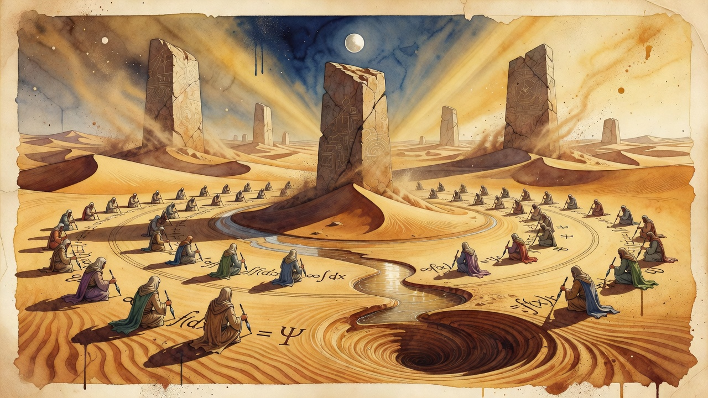

MILLENNIUM PRIZE
OpenAI says AI agents produced a Lean-checked proof that Navier-Stokes can blow up in finite time
Roughly 10,000 AI agents powered by a next-generation model reported to be more capable than GPT-6 Astra produced an analytical proof and Lean formalization showing the Navier-Stokes equations can develop a singularity in finite time. OpenAI says the run took 88 hours under strict isolation and that the result will steer how the lab paces future capability advances.